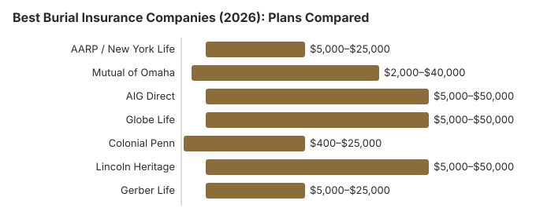

Best Burial Insurance Companies (2026): Plans Compared
Disclaimer: Information only, not professional advice. Full disclaimer.
What this page is for. This page names carriers and shows planning ranges. It is not the definition of the product. Read the explainer first if you are new to it, the comparison if you are choosing between a policy and a preneed contract, and the senior page if the question is age.
Burial insurance -- also called final expense insurance -- is one of the most practical ways to ensure your family is not burdened with funeral costs. But with dozens of companies competing for your business through TV commercials, direct mail, and online ads, it can be difficult to know which provider offers the best value for your situation. We researched and compared seven of the most prominent burial insurance companies in 2026, examining their coverage options, premium ranges, financial strength, acceptance criteria, and claims process. This guide provides honest, side-by-side comparisons so you can make an informed decision without the sales pressure.
Quick Overview: Top Burial Insurance Companies
All seven companies we review are well-established insurers with strong or adequate financial ratings. However, they differ significantly in who they are best suited for. Some specialize in healthy applicants seeking the lowest rates, while others focus on guaranteed acceptance for people with serious health conditions. Understanding these differences is key to finding the right fit.
Before diving into individual companies, here are our top-level picks:
- Best overall: Mutual of Omaha -- competitive rates, strong financial rating (A+ AM Best), and a reputation for straightforward policies
- Best for AARP members: AARP / New York Life -- trusted brand, group rates, and member discounts
- Best for guaranteed acceptance: Colonial Penn -- no health questions, guaranteed issue available for ages 50 to 85
- Best online experience: AIG Direct -- easy online application, competitive rates for healthy applicants
- Best for families with children: Gerber Life -- offers policies for all ages, including children and young adults
- Best for veterans and military: Globe Life -- extensive direct mail and TV marketing with simplified issue options
- Best for Hispanic and Spanish-speaking families: Lincoln Heritage -- bilingual agents and materials, strong community presence
Company Comparison Table
The following table provides a snapshot comparison of all seven companies. Scroll right on mobile to see all columns.
| Company | AM Best Rating | Coverage Range | Issue Ages | Policy Types | Payout Speed |
|---|---|---|---|---|---|
| AARP / New York Life | A++ (Superior) | $5,000 – $25,000 | 50 – 80 | Level, Guaranteed Issue | 2 – 4 weeks |
| Mutual of Omaha | A+ (Superior) | $2,000 – $40,000 | 45 – 85 | Level, Graded, Guaranteed | 2 – 3 weeks |
| AIG Direct | A (Excellent) | $5,000 – $50,000 | 50 – 80 | Level, Simplified, Guaranteed | 2 – 4 weeks |
| Globe Life | A (Excellent) | $5,000 – $50,000 | 45 – 85 | Simplified, Guaranteed | 3 – 6 weeks |
| Colonial Penn | A- (Excellent) | $400 – $25,000 | 50 – 85 | Guaranteed Issue Only | 3 – 6 weeks |
| Lincoln Heritage | A- (Excellent) | $5,000 – $50,000 | 40 – 85 | Level, Simplified, Guaranteed | 1 – 3 weeks |
| Gerber Life | A (Excellent) | $5,000 – $25,000 | 50 – 80 | Level, Guaranteed | 2 – 4 weeks |

Quotes checked: reviewed 2026-10-22. The monthly figures in the tables on this page are the planning ranges already published here. They are not a rate-card download from the carriers on that date, and we did not re-shop personal quotes for this update. Ask each insurer for a current illustration before you compare. Premiums change with age, health, tobacco use, sex, and state.
Monthly Premiums by Age: How the Companies Compare
The following table shows approximate monthly premiums for a $10,000 standard issue policy for a non-smoking male in 2026. Female rates are typically 15 to 25 percent lower. Actual rates vary by individual health profile and state.
| Age | AARP / NYL | Mutual of Omaha | AIG Direct | Globe Life | Colonial Penn | Lincoln Heritage | Gerber Life |
|---|---|---|---|---|---|---|---|
| 50 | $32 | $28 | $30 | $35 | $55* | $31 | $33 |
| 55 | $42 | $36 | $38 | $45 | $68* | $40 | $43 |
| 60 | $58 | $50 | $52 | $60 | $88* | $55 | $60 |
| 65 | $80 | $68 | $72 | $82 | $115* | $75 | $82 |
| 70 | $110 | $95 | $100 | $115 | $155* | $105 | $115 |
| 75 | $155 | $135 | $140 | $165 | $210* | $150 | $160 |
| 80 | $220 | $190 | $200 | $235 | $290* | $215 | $225 |
* Colonial Penn rates reflect their guaranteed issue product (no health questions). Their unit-based pricing means you purchase "units" of coverage, and these rates represent the approximate monthly cost to accumulate $10,000 in coverage. Other companies' rates shown are for standard issue policies that require health qualification.
Key insight: Mutual of Omaha and AIG Direct consistently offer the most competitive rates for healthy applicants. Colonial Penn costs more per dollar of coverage because they accept everyone regardless of health -- you are paying a premium for guaranteed acceptance. If you can qualify for a standard or simplified issue policy elsewhere, you will save significantly.
AARP / New York Life
The AARP burial insurance program is underwritten by New York Life, one of the largest and most financially secure insurance companies in the United States. This partnership combines AARP's trusted brand recognition with New York Life's A++ (Superior) AM Best rating and over 175 years of financial stability.
Coverage Details
- Coverage amounts: $5,000 to $25,000
- Issue ages: 50 to 80
- Policy types: Level benefit (with health questions) and guaranteed acceptance (no health questions)
- Premiums: Fixed for life; never increase
- Waiting period: None for level benefit; 2 years for guaranteed acceptance
- AARP membership required: Yes (membership costs $16 per year and is available to anyone 50+)
Pros
- Backed by New York Life -- A++ financial strength rating
- AARP brand recognition provides trust and confidence
- Competitive group rates for AARP members
- No medical exam required
- Policy cannot be cancelled by the insurer as long as premiums are paid
- 30-day free look period
Cons
- Requires AARP membership ($16/year)
- Maximum coverage limited to $25,000
- Not available to applicants under 50
- Guaranteed acceptance option has 2-year graded benefit period
- Rates may not be the absolute lowest available from independent insurers
Mutual of Omaha
Mutual of Omaha is widely considered the gold standard in the burial insurance market. Their Living Promise whole life product offers competitive rates, flexible coverage amounts, and multiple policy tiers to accommodate applicants across the health spectrum. With an A+ (Superior) AM Best rating and over a century of operational history, Mutual of Omaha combines reliability with value.
Coverage Details
- Coverage amounts: $2,000 to $40,000
- Issue ages: 45 to 85
- Policy types: Level benefit, graded benefit, and guaranteed issue -- three tiers based on health
- Waiting period: None for level; 2 years for graded and guaranteed
- Medical exam: Not required for any tier
Pros
- Widest coverage range ($2,000 to $40,000) among major providers
- Three policy tiers mean almost everyone can find appropriate coverage
- Among the lowest standard issue rates in the market
- A+ AM Best financial rating
- Fast claims processing -- typically 2 to 3 weeks
- Available in most states
- Broadly accepted by independent agents for easy comparison shopping
Cons
- Graded and guaranteed tiers have a 2-year waiting period
- Not available in all states for all tiers
- Online application may require phone follow-up
AIG Direct
AIG Direct, the consumer-facing brand of American International Group, offers burial and final expense insurance through a streamlined online application process. Their digital-first approach makes it easy to get quotes, compare options, and apply without speaking to an agent. AIG carries an A (Excellent) AM Best rating backed by one of the world's largest insurance organizations.
Coverage Details
- Coverage amounts: $5,000 to $50,000
- Policy types: Level benefit, simplified issue, and guaranteed acceptance
- Waiting period: None for level and simplified issue; 2 years for guaranteed
- Medical exam: Not required
Pros
- Highest maximum coverage ($50,000) among companies reviewed
- Excellent online application experience -- quotes available in minutes
- Competitive rates for healthy applicants
- A (Excellent) AM Best rating backed by global AIG
- Multiple policy tiers to accommodate various health levels
Cons
- Not available in all states for all product types
- Guaranteed issue option has 2-year graded benefit
- Customer service can be harder to reach compared to smaller, agent-focused companies
- Minimum coverage of $5,000 may be too high for some budgets
Globe Life
Globe Life (formerly Torchmark Corporation) is one of the most heavily advertised burial insurance providers in the United States. You have likely seen their TV commercials and direct mail pieces promising coverage for as little as "$1 a day." They offer simplified issue policies that ask limited health questions and guaranteed issue options for those who cannot qualify elsewhere. Globe Life carries an A (Excellent) AM Best rating and has been in operation since 1951.
Coverage Details
- Policy types: Simplified issue and guaranteed issue
- Waiting period: None for simplified issue (if approved); 2 years for guaranteed
Pros
- Wide acceptance -- simplified issue accepts many applicants with minor health issues
- Coverage up to $50,000
- A (Excellent) AM Best rating
- Easy to apply -- direct mail applications and phone applications available
- No medical exam
- Long track record since 1951
Cons
- Rates tend to be higher than Mutual of Omaha and AIG Direct for equivalent coverage
- Aggressive marketing and sales tactics -- be prepared for follow-up calls and mail
- Claims processing can be slower (3 to 6 weeks)
- Some consumer complaints about sales pressure and policy misrepresentation
- The "$1 a day" advertised price typically buys very limited coverage
Colonial Penn
Colonial Penn, a subsidiary of CNO Financial Group, is best known for its guaranteed acceptance life insurance -- the product heavily advertised by the late Alex Trebek and now by other spokespeople. Their unique "units" pricing model means everyone of the same age and gender pays the same price per unit of coverage, regardless of health. Colonial Penn carries an A- (Excellent) AM Best rating.
Coverage Details
- Coverage amounts: Approximately $400 to $25,000 (varies by age -- purchased in "units")
- Issue ages: 50 to 85
- Policy types: Guaranteed issue only -- no health questions whatsoever
- Waiting period: 2 years for full benefit (accidental death covered from day one)
- Medical exam: Not required; no health questions asked
How the Unit System Works
Colonial Penn sells coverage in "units." Each unit provides a specific amount of death benefit based on your age and gender at the time of purchase. For example, a 65-year-old male might get approximately $650 per unit at a cost of around $9.95 per month per unit. To accumulate $10,000 in coverage, you would need approximately 15 to 16 units, costing around $150 to $160 per month. Younger applicants get more coverage per unit.
Pros
- Guaranteed acceptance -- no health questions, no medical exam, no denial
- Simple, transparent pricing -- everyone the same age and gender pays the same
- Fixed premiums that never increase
- A- (Excellent) AM Best rating
- Accidental death covered from day one
Cons
- Significantly more expensive per dollar of coverage than standard issue policies from other companies
- 2-year waiting period for full death benefit (natural causes)
- Maximum coverage is limited and decreases with age
- Unit pricing can be confusing -- difficult to compare directly with other companies
- If you are healthy enough to qualify elsewhere, you are overpaying substantially
Lincoln Heritage
Lincoln Heritage Life Insurance Company has carved out a unique niche in the burial insurance market through its agent-driven model and strong presence in Hispanic and Latino communities. Their "Funeral Advantage" program bundles a whole life policy with a funeral planning benefit that assigns a personal planning representative to help your family at the time of need. Lincoln Heritage carries an A- (Excellent) AM Best rating.
Coverage Details
- Issue ages: 40 to 85
- Policy types: Level benefit, simplified issue, and guaranteed issue
- Waiting period: None for level benefit; 2 years for graded/guaranteed
- Special feature: Funeral Advantage planning benefit included at no extra cost
Pros
- Competitive rates -- often among the lowest for standard issue
- Funeral Advantage benefit provides free funeral planning assistance to your family
- Fast claims processing -- often within 1 to 3 weeks
- Bilingual agents and materials available (English and Spanish)
- Wide issue age range (40 to 85)
- Strong agent network for in-person assistance
Cons
- Agent-driven model means you must work with a local agent -- limited direct online purchasing
- Agent quality varies -- some may use high-pressure tactics
- The Funeral Advantage benefit locks in a specific funeral home network, which may limit your family's choices
- Not available in all states
Gerber Life
Gerber Life Insurance Company, a subsidiary of Western & Southern Financial Group, is best known for children's life insurance but also offers a competitive guaranteed life insurance product for adults aged 50 to 80. Their guaranteed issue policy is straightforward and comes from a company with an A (Excellent) AM Best rating and a long history of serving families.
Coverage Details
- Policy types: Level benefit (with health questions) and guaranteed issue (no health questions)
- Waiting period: None for level; 2 years for guaranteed issue
Pros
- Well-known, trusted family brand
- A (Excellent) AM Best rating backed by Western & Southern Financial Group
- Competitive standard issue rates
- Simple application process
- Also offers policies for children and young adults -- can insure the whole family
Cons
- Not available in all states for all products
- Guaranteed issue product costs more than standard issue elsewhere
- Less specialized in the final expense market compared to Mutual of Omaha or Lincoln Heritage
How to Choose the Right Burial Insurance Company
With so many options, selecting the right burial insurance company comes down to your specific needs and circumstances. Here is a practical framework for making your decision:
Step 1: Determine How Much Coverage You Need
Start by estimating your total funeral costs. The national median funeral costs $8,300 for a traditional service with viewing and burial, or $6,280 for cremation with a viewing and service (NFDA 2023 General Price List Study, the most recent edition), before cemetery charges. You may also want to cover outstanding medical bills, credit card debt, or other final expenses. Most families find that $10,000 to $15,000 provides adequate coverage. Use our funeral cost breakdown to estimate your specific needs.
Step 2: Assess Your Health Status
Your health determines which type of policy you can qualify for and dramatically affects your premium:
- Good health, no major conditions: Apply for standard issue policies from Mutual of Omaha, AIG Direct, or Lincoln Heritage for the lowest rates.
- Moderate health issues (managed diabetes, controlled blood pressure, etc.): Look at simplified issue policies from Globe Life, Lincoln Heritage, or Mutual of Omaha's graded tier.
- Serious health conditions or recent hospitalizations: Guaranteed issue from Colonial Penn, Globe Life, or Gerber Life will accept you with no health questions, though premiums are higher and there is a waiting period.
Step 3: Compare Rates for Your Age and Health
Get quotes from at least three companies. Rates vary significantly between providers, and the cheapest option for a 55-year-old may not be the cheapest for a 75-year-old. Always compare apples to apples: the same coverage amount, same policy type, and same payment terms.
Step 4: Check the Financial Rating
Stick with companies rated A- or higher by AM Best. A burial insurance policy is a long-term commitment, and you need confidence that the company will be financially stable when your family files a claim, which could be decades from now. All seven companies reviewed in this guide meet this standard.
Step 5: Read the Policy Terms Carefully
Before signing, understand the waiting period, graded benefit terms, free-look period, and cash surrender value provisions. Ask about what happens if you miss a payment, and how the claims process works for your beneficiary.
What to Watch For When Buying Burial Insurance
The burial insurance market has its share of misleading practices. Protect yourself by watching for these common issues:
- Guaranteed issue pushed when you qualify for standard: Some agents steer healthy applicants toward guaranteed issue policies because they pay higher commissions. Always ask if you qualify for a standard or simplified issue policy first -- it could save you 30 to 50 percent on premiums.
- Misleading "pennies a day" advertising: Ads promising coverage for "$1 a day" or "just pennies" typically buy only minimal coverage. Read the fine print to understand exactly how much death benefit that premium actually provides.
- Pressure to buy immediately: No legitimate insurance decision needs to be made on the spot. Any agent who says "this rate expires today" or "I can only hold this price for 24 hours" is using a high-pressure tactic.
- Ignoring the waiting period: Make sure you understand the graded benefit terms. If you die from natural causes during the 2-year waiting period on a guaranteed issue policy, your beneficiary will receive only a return of premiums plus interest -- not the full death benefit.
- Paying more than the benefit: Run the math. If you are 80 years old paying $200/month for a $10,000 policy, you will have paid the full death benefit amount in just over 4 years. A dedicated savings account might be a better alternative.
- Companies with low financial ratings: Avoid insurers rated below B+ by AM Best. A low rating means a higher risk that the company could become financially unstable before your claim is filed.
For more on protecting yourself from predatory insurance practices, see our funeral insurance comparison guide and our complete funeral insurance guide.
Frequently Asked Questions
What is the best burial insurance company in 2026?
There is no single best company for everyone. Mutual of Omaha is commonly cited as well-rated for most applicants based on NAIC complaint-ratio data and A.M. Best financial-strength ratings. AARP/New York Life is often selected by AARP members seeking trusted brand recognition. For guaranteed issue coverage with no health questions, Colonial Penn and Globe Life are frequently cited, though premiums are higher. Always verify an insurer's current rating with A.M. Best and license status with your state insurance commissioner before purchase.
How much does burial insurance cost per month?
Monthly premiums depend on your age, health, gender, and coverage amount. For a $10,000 policy, a healthy 55-year-old might pay $30 to $55 per month, a 65-year-old might pay $55 to $110, and a 75-year-old might pay $100 to $200. Guaranteed issue policies with no health questions cost 50 to 100 percent more than standard policies. Women generally pay 15 to 25 percent less than men for the same coverage.
Can I get burial insurance with pre-existing conditions?
Yes. Many burial insurance companies offer simplified issue policies that accept applicants with common health conditions like diabetes, high blood pressure, or heart disease. If you have more serious conditions, guaranteed issue policies from companies like Colonial Penn, Globe Life, and Gerber Life accept all applicants with no health questions, though they include a two to three year waiting period before the full benefit is payable.
What is the difference between burial insurance and final expense insurance?
Burial insurance and final expense insurance are the same product marketed under different names. Both are small whole life insurance policies, typically between $5,000 and $25,000, designed to cover funeral and end-of-life costs. The death benefit goes to your named beneficiary, who can use it for any purpose. Insurance companies use different terminology for marketing reasons, but the policy structure is identical.
How fast do burial insurance companies pay claims?
Most reputable burial insurance companies process and pay claims within 30 to 60 days. Some, like Mutual of Omaha and AIG Direct, have streamlined claims processes that can pay within two to four weeks. However, claims during the graded benefit or waiting period of guaranteed issue policies may take longer. Having a clearly named beneficiary with easy access to the policy documents speeds up the process.
Is burial insurance worth it for seniors over 70?
It depends on your financial situation. For seniors over 70 who do not have savings or existing life insurance to cover funeral costs, burial insurance means their family will not be left with the bill. However, premiums are significantly higher at older ages, and you should compare the total premiums you would pay over your expected lifetime against the death benefit. A dedicated savings account or payable-on-death bank account may be more cost-effective for some seniors.
What is the graded benefit period on burial insurance?
A graded benefit period, also called a waiting period, is common on guaranteed issue policies. It typically lasts two to three years from the policy start date. If the insured dies from natural causes during this period, the beneficiary receives only a partial benefit, usually a return of premiums paid plus a small percentage of interest, rather than the full death benefit. After the waiting period ends, the full death benefit is payable. Accidental death is usually covered in full from day one.
Can I cancel burial insurance and get my money back?
Most burial insurance policies have a free-look period of 10 to 30 days after purchase during which you can cancel for a full refund. After that, if you cancel, you may receive the cash surrender value, which is typically very small in the early years and grows slowly over time. Whole life policies do build cash value, but it takes many years before the surrender value becomes meaningful. You will not get back the full amount of premiums paid.
Who regulates burial insurance, and does the Funeral Rule apply?
Burial insurance is regulated by the insurance department of the state where you buy the policy. Because the McCarran-Ferguson Act leaves insurance mainly to the states, that department licenses both the company and the agent who sells it, approves the policy forms and takes complaints about claims or sales practices. The National Association of Insurance Commissioners links to every state department at content.naic.org.
The FTC Funeral Rule does not cover insurers, so none of its price-list rights apply to a burial or final expense policy. A preneed contract sold by a funeral home is a different product, and depending on the state it falls under the funeral board, the insurance department or both.
Resources That May Help
- NAIC (National Association of Insurance Commissioners)Look up insurance company complaint ratios and consumer information
- AM BestCheck financial strength ratings for any insurance company
- Funeral Insurance ComparisonUnderstand the differences between final expense, burial, and pre-need insurance
- Funeral Cost BreakdownEstimate how much coverage you need based on detailed cost analysis
Get Our Free Funeral Cost Guide
Sign up for occasional email updates on burial insurance, funeral costs and your rights as a buyer.
No spam. Unsubscribe anytime. We respect your privacy.
Sources & review: Rate context and company framing reflect National Association of Insurance Commissioners (NAIC) complaint-index data, A.M. Best financial-strength ratings, FTC Funeral Rule (16 CFR Part 453), and state insurance department filings. National figures updated 2026-10-02; reviewed 2026-10-22 by Paul Paradis, Founder & Editor (Boston, MA). Not licensed insurance advice.